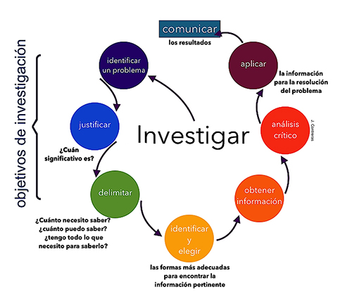
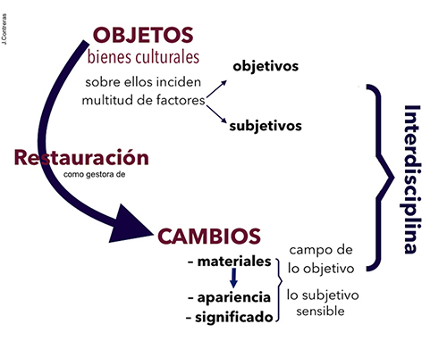
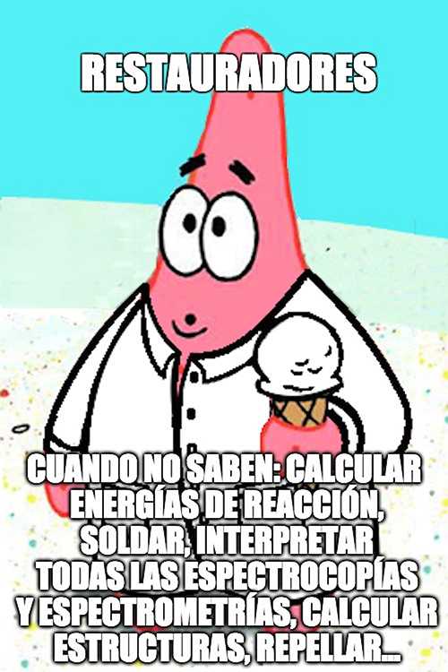
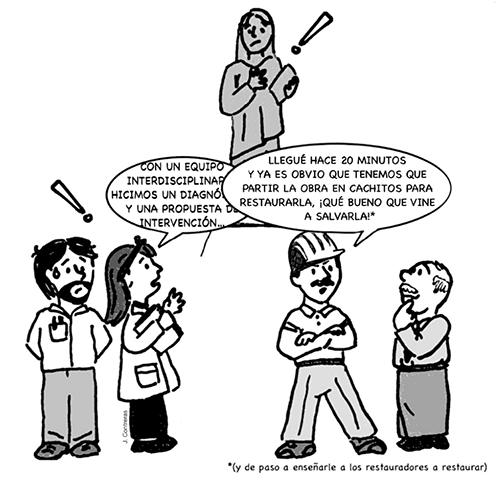

Investigar sirve para resolver problemas. Investigar en conservación-restauración sirve para resolver problemas de conservación y restauración
Jannen Contreras Vargas
Este texto surge a partir de una invitación que se me hizo para hablar sobre la investigación en conservación, en los ciclos denominados “Principios, criterios y normatividad”, organizados por la Coordinación Nacional de Conservación del Patrimonio Cultural en 2015.
Durante mi participación no abordé nada novedoso, como tampoco lo hago aquí. Varios podrían decir que son verdades de Perogrullo; sin embargo, tras la charla y al paso de los días, muchos colegas y profesionales de otras áreas se acercaron para señalarme que lo que allí había expuesto les había clarificado varios aspectos sobre la importancia de la restauración, y respecto a cómo es que los restauradores, en efecto, investigamos. Este hecho, además de resultarme satisfactorio de manera personal, me permitió ver que como área necesitamos hablar mucho todavía sobre el lugar que ocupa nuestra disciplina entre las ciencias, y el lugar de sus profesionales en la investigación.
Aunque el texto es en esencia serio e incluye citas de Mittelstrass, Kuhn y Morin, por nombrar algunos, cuenta con algunas ilustraciones de mi autoría e interpretación, motivadas por hechos reales –sí, basados en casos de la vida real¬–, de modo que de haber podido lo habría ilustrado como una fotonovela.
Lo propio del conocimiento no es ver ni demostrar, sino interpretar.
Michael Foucault
La investigación va de la mano de lo científico; desafortunadamente, existe un gran edificio de prejuicios sobre la ciencia que la han dado un cariz de perfección tal que con solo añadir el adjetivo “científico” a cualquier actividad, ya la vuelve cierta, objetiva e incontrovertible. Así, como bien señalara Muñoz Viñas (2005: 75-76), en restauración hemos pasado por un largo periodo en el que por ciencia se han tomado ideas de minuciosidad, determinismo y una objetividad absoluta que son a menudo absurdas. Es por ello que la llamada “restauración científica” ha tenido tan buena acogida; ejercer una disciplina que se ocupa de bienes de interés público y cuyos resultados frecuentemente son controvertibles, y de hecho controvertidos, es riesgoso. Contar con un respaldo tal que blinde nuestras intervenciones, de modo que con un sueño de objetividad demos fin al pesar del corazón y a los miles de naturales conflictos que constituyen la crítica ¡es meta digna de ser devotamente deseada!, diría Shakespeare.
A partir de este supuesto de lo científico entre propios y extraños, la restauración sigue debiendo aspirar a lo objetivo, a través del ejercicio “la restauración científica”, estableciendo:
planteamientos científicos alejados de criterios mayoritariamente filosóficos, basados casi exclusivamente en el intento de alcanzar restauraciones objetivamente reversibles, irrebatibles, bien proyectadas y bien ejecutadas, viables en precio y en plazo, de forma no perjudicial (demostrable) para el bien cultural del que en cada caso se trate (Cercós, 2014 en http://lc-architects.blogspot.mx).
Así, pareciera que la fórmula perfecta para la restauración se encuentra en desplegar la variedad más grande de análisis para tener tantos datos del objeto a intervenir como sea posible, pues así: “[…] la inspiración, la intuición y el empirismo se acaban […] El resultado de cada uno de los 20 estudios que se realizarán será un diagnóstico científico e irrefutable que nos permitirá realizar una restauración científica, de alto nivel” (Alcántara en Sánchez, Milenio, 01 mayo 2014). Aunque haya un error en el planteamiento de esta última cita, y el empirismo1 sea justamente lo que posibilita la obtención de evidencia que ha dado pie al desarrollo de la ciencia cartesiana, es interesante este empeño por desmarcarse de cualquier cosa que huela a subjetividad, como si esta fuera algo necesariamente negativo y se pudiera conseguir el anhelo de lograr algo irrefutable.
Tendríamos que repensar qué es lo científico en la conservación-restauración en el momento actual en el que ya es evidente que este empeño de objetividad es inútil: la restauración tiene un gran componente subjetivo e intuitivo y es el más importante. La razón de ser del patrimonio es subjetiva: la apreciación estética, los vínculos identitarios, el significado. Las filias y fobias hacia un bien o manifestación cultural podrían intentar medirse, pero sería absurdo: “La teoría contemporánea de la Restauración, se basa en la apreciación de valores inmateriales y subjetivos” (Jiménez, 2010, en https://teoriadelarestauracion.wikispaces.com), y ¿por qué y cómo querríamos volver del todo mesurable algo tan humano como el patrimonio cultural y la disciplina que se encarga de conservarlo y restaurarlo?
Las muchas y muy distintas formas de entender la ciencia están en permanente cambio y desarrollo; bien valdría aprovechar lo dicho por Thomas Kuhn para buscar comprenderla de un modo más justo que como una fábrica de conocimiento indiscutible e inamovible: la ciencia es una estructura cognoscitiva dinámica que surge y se desarrolla dentro de un contexto histórico-social, un paradigma constituido por un conjunto de valores cognitivos que dependen de la comunidad científica (Kuhn, 1982: 269). De este modo, incluso el conocimiento producido en el seno de la ciencia depende de un conjunto de condiciones brindadas por una comunidad humana que, como sabemos, es imposible que sea del todo objetiva.
Las disciplinas y formas de obtener conocimiento se han ido complejizando; y ante esto, andando el tiempo, surgieron las ciencias de la complejidad que se basan en los hechos que apunta Morin: el método científico clásico (cartesiano) y su enfoque reduccionista han entrado en crisis al buscar explicar el todo a partir de sus partes, pues no permite comprender fenómenos políticos, económicos, naturales, sociales (como los que dan origen y sentido al patrimonio cultural), cuyas características y potencialidades solo son visibles cuando se analiza cómo interactúan con otros elementos (Morin, en Naranjo, 2007 en https://andreanaranjo.wordpress.com).
Ante este nuevo paradigma de la ciencia hay que notar que la investigación científica no es solo la obtención de datos objetivos –sin pretender jamás reducir la importancia y utilidad de los datos objetivos–, sino que sirve para resolver problemas, problemas complejos que tienen componentes materiales y no materiales. Así, en la conservación-restauración, la ciencia no solo está mucho más allá de la obtención de información objetiva (como cuánto penetra un consolidante, qué espesor tiene una capa de recubrimiento o cuál es la composición de un material2), sino que es eminentemente humana y social, se entrelaza en la imagen y el significado; en la interpretación de los bienes; en las necesidades de la sociedad en torno a ellos, y por tanto, en cómo llegamos a nuestras tomas de decisiones, y qué decidimos3.
Los problemas que resuelve la conservación-restauración
Me parece que una definición adecuada para la investigación científica es: la formulación de preguntas, la colecta de información de forma empírica, ordenada, crítica y sistemática sobre las relaciones entre características y fenómenos, seguida de la organización y análisis de los datos obtenidos para obtener pautas, relaciones y tendencias que ayuden a dar respuesta a las preguntas inicialmente planteadas mediante el entendimiento logrado, para la construcción de predicciones en un abanico de escenarios; y/o, también, para soportar la toma de decisiones. De esta forma, podríamos establecer que la investigación sigue una serie de pasos que me he permitido sintetizar de la siguiente manera:

Figura 1. Estadios de la investigación científica. Contreras, 2017.
Entonces, si identificamos un problema propio de la conservación-restauración –qué y qué tanto reintegrar, por ejemplo– determinamos cuán significativo es; lo delimitamos, lo identificamos y elegimos las formas más adecuadas para encontrar información pertinente para resolverlo. Si obtenemos información y la analizamos; si aplicamos esta información para la resolución del problema identificado y comunicamos nuestros hallazgos; entonces estamos, de hecho, haciendo investigación científica, generando conocimiento y (redobles de tambor, por favor) haciendo ciencia.
Habrá quienes piensen que ubicar a la restauración como una ciencia está fuera de lugar; que es un intento poco congruente de darle validez y certeza para hacerla semejante a la “verdadera ciencia”, esa que predice y explica fenómenos generales como la relatividad o la gravedad, y no nuestras investigaciones hechas desde la casuística, con una repetibilidad muy limitada. Sin embargo, Elizabeth Pye (2001:9) no tiene problema en definir a la conservación-restauración como una ciencia aplicada relativamente joven4. Tras haber leído lo expresado por Thomas Kuhn y Edgar Morin sobre la ciencia y su variedad, podríamos no tener tanta complicación para entender a la restauración como lo expone Pye, o como ha hecho Jaime Cama (2012:7) al señalarla como una ciencia antropológica5. Para conducir correctamente la investigación en conservación-restauración, hay que ser conscientes de que tendremos que resolver problemas de conservación-restauración. Esto puede sonar demasiado obvio, pero a veces determinar cuáles son tales problemas no resulta tan fácil, y es más difícil cuando no tenemos suficiente claridad sobre los objetivos de nuestra disciplina, o más aún, cuando quien dirige una investigación de conservación-restauración –o pretende hacerlo– no es un profesional de la restauración.
Por ello, bien vale empezar por señalar qué no necesitamos hacer, qué tipo de preguntas no hace falta responder o que objetivos son incluso absurdos:
¿Qué sí necesitamos resolver? Necesitamos contar con información adecuada y suficiente para determinar:
Las anteriores preguntas sintetizan los principales problemas a los que nos enfrentamos, aunque al desmenuzarlas surjan numerosas particularidades de orden objetivo y subjetivo que nos llevan a investigar sobre composición, factura, deterioro y alteración, percepción, significado, criterios, límites, tratamientos, materiales, etc.
Dichas preguntas, además, nos permiten cumplir la tarea que según Clark y Clark (2001:8-9) es esencial para llevar a cabo cualquier actividad de restauración: entender los artefactos que se van a conservar. Identificar, plantear y responder las preguntas de modo correcto, así como establecer y cumplir los objetivos de intervención de manera congruente, nos obliga a la interdisciplina (Contreras, Peñuelas y López 2015: 243), y en el mejor de los casos, a la transdisciplina.

Figura 2. Esquematización de los aspectos objetivos y subjetivos que analiza y gestiona la conservación-restauración. Contreras, 2017.
En el esquema anterior se identifican aspectos objetivos y subjetivos en los objetos. Desde lo objetivo se incluyen los materiales constitutivos y su comportamiento; en lo subjetivo se encuentra la imagen o las decisiones que generaron que el objeto fuera de una manera y no de otra. Esta complejidad solo puede ser entendida si distintas áreas del conocimiento participan de su entendimiento con un objetivo común. La acción de restauración administra y genera información y cambios en los materiales que corresponden al ámbito de lo objetivo, donde las ciencias exactas son indispensables, y administra cambios en la apariencia, posibilidad de apreciación y significado, aspectos que solo se pueden entender desde el campo de lo subjetivo, de lo sensible; de las ciencias sociales, las humanidades y las artes.
Desafortunadamente, en el ejercicio hemos creído que tener a especialistas de diversas áreas trabajando juntos ya es multidisciplina, y que esta es suficiente y adecuada, aunque los involucrados trabajen de manera diferida y sin un objetivo común definido. Esto ha tenido resultados de lo más variopinto y no han sido escasas las ocasiones en las que nuestra disciplina y nuestros profesionales no han salido bien librados.
La interdisciplina, en cambio, exige que todas las disciplinas involucradas tengan pesos específicos similares y un trato de iguales; así, se aprovecha el conocimiento y capacidades de todos los involucrados, lo que sin duda exige de personas más respetuosas, y brinda mejores resultados que permiten negociar y colaborar en la solución de los problemas. La negociación se da entre iguales que se respetan, de otra forma, la única posibilidad es la imposición. Por fortuna, existen varios ejemplos de trabajo interdisciplinar en el ejercicio de la conservación-restauración en México que, paulatinamente, muestran buenos resultados.
Jürgen Mittelstrass (2011) señaló que la interdisciplina normalmente significa una cooperación concreta con una duración finita, sobrepasando los límites de las disciplinas y las instituciones, algo a lo que hemos aspirado por años en conservación-restauración. Por su parte, advierte que la transdisciplina es una forma de investigar sobre problemas de la realidad, como los problemas de política medioambiental, energética y, por supuesto, la forma concreta de abordar el patrimonio cultural¬, o aquellos intracientíficos sobre el orden del conocimiento y la investigación en sí misma.
La transdisciplina constituye una cooperación que conducirá a un orden científico duradero y sistemático que cambiará la perspectiva de las disciplinas, así como sus formas de resolver problemas, sin solidificarse en las formas teóricas; es decir, sin buscar la unificación teórica o conceptual de la ciencia ni formar nuevas disciplinas o reemplazarlas (Mittelstrass, 2011). Así, me parece que la transdisciplina resulta ideal para abordar los problemas de patrimonio y de restauración en concreto, en tanto que orienta la percepción de los problemas y posibilita métodos que permitan abordar los problemas y encontrarles soluciones.
Las responsabilidades de los conservadores-restauradores
Como ya se ha discutido, la forma más adecuada para obtener información debiera ser de manera interdisciplinaria o transdisciplinar, aprovechando los métodos y las herramientas de las diferentes disciplinas. Desafortunadamente este es el mundo del deber ser y todos hemos debido trabajar con gente con ego endeble y poco respetuosa, quien desde su área de conocimiento o experiencia, busca hacer menos al que tiene enfrente para ampliar su poder y área de acción. Esto pasa en todos los ámbitos, pero lo padecemos con frecuencia los restauradores, pues ante la ausencia de un mayor reconocimiento sobre la relevancia de nuestra actividad, métodos y resultados, personas con estas infaustas y poco agradables características no encuentran mayor problema en señalar nuestras supuestas “carencias”. Así, según ellos, todos los restauradores, para serlo, además de lo que sí sabemos hacer, deberíamos saber modelar en barro, calcular energías de reacción, soldar, diseñar montajes, interpretar un cromatograma, identificar zonas de carga, determinar la carga máxima según el área de la sección y la densidad, interpretar resultados de todas las espectrocopías y espectrometrías, hacer análisis de elementos finitos y patinaciones químicas, diseñar y calcular una estructura autoportante, hacer repellados, diseñar entrevistas y grupos de enfoque, colar una loza, tallar en madera, dorar, estofar, dominar la fenomenología, y un larguísimo etcétera a todas luces imposible para los restauradores o para cualquier ser humano.

Figura 3. Por fortuna son solo algunos los que nos clasifican de esta forma, y cada vez queda más clara la importancia de la conservación-restauración y sus profesionales. Contreras, 2017.
Cada vez que he escuchado a alguien señalar a los restauradores por no saber hacer algo en lo que esa persona es especialista, me pregunto: ¿por qué le molesta? Si supiéramos o quisiéramos hacerlo no le consultaríamos, no participaría en el proyecto y/o no se le pagaría por hacerlo. Entonces, ¿cuál es el problema? El problema es que a sus ojos la restauración no es una profesión seria y, en consecuencia, los restauradores, pese a nuestra formación, no les parecemos profesionales serios y, por lo tanto, les resultamos prescindibles. Si bien esto es muy desafortunado, lo más desafortunado no es que externos desconozcan la importancia de la restauración, y los restauradores en la resolución de los problemas de restauración (y al expresarlo así busco ser enfática y no cacofónica), sino que los restauradores asumamos que tales carencias supuestas son en realidad fallas nuestras que alguien más debe solucionar, de modo que nos sentimos culpables ni menos capaces y cedemos espacios de decisión a quien no debe, y en realidad no puede, decidir en materia de conservación-restauración.

Figura 4. Un ejemplo “hipotético” de uno de esos casos en los que, para algunos, los restauradores son prescindibles o secundarios en los proyectos de restauración. Contreras, 2017.
Un proyecto de restauración que conjuntó a importantes científicos mexicanos constituye un ejemplo de esto: extraoficialmente algunos de los “científicos”6 tomaron las riendas del asunto y no dieron el justo peso e importancia a la restauración y a los restauradores; como resultado, se tuvieron reportes separados de gran calidad técnica pero que en su conjunto no habían identificado el problema central en la superficie del objeto, lo cual tuvo como resultado que no se hicieron las calas de limpieza, tan propias de cualquier trabajo de restauración, y, por tanto, no se identificó la presencia de su capa pictórica. De haber seguido con ese sistema de trabajo y partiendo de la información obtenida, la capa pictórica habría seguido ignorada en la propuesta de intervención y, por lo tanto, en las labores de restauración, corriendo el riesgo de ser eliminada7. Todo por no respetar el trabajo del restaurador" en pos de lograr una metodología supuestamente científica, objetiva e irrefutable, que en realidad fue incompleta e incorrecta.
Ejemplos como estos hay varios, y debe quedar claro a propios y extraños que los restauradores no somos artistas, ni artesanos (carpinteros, ceramistas, bordadores, entalladores, tintoreros, fundidores, albañiles, etc.) ni arqueólogos ni químicos –de cualquier tipo– ni ingenieros –de cualquier tipo– ni físicos, ni historiadores –de cualquier tipo– ni sociólogos, y no necesitamos serlo: somos restauradores, ni más ni menos.
Y tras este énfasis, debo solicitar una concesión para tomar un dicho de Miguel Ángel Bastenier (2014) respecto de los periodistas8 y aplicarlo a nuestra profesión: “El conservador-restaurador es la suma de todas esas cosas que no es”.
El conservador-restaurador requiere de trabajar con una gran variedad de disciplinas, pero es este quien determina cómo se conserva y restaura; por lo tanto, la investigación que conduce debe ser planteada en consecuencia y ser útil para esos fines.
Pocos lo han expresado tan claramente como el Dr. Joaquín Barrio (2015):
Todas las otras disciplinas involucradas en la restauración posibilitan hacer mejor y con más medios nuestro trabajo, pero el núcleo de nuestra ciencia es la intervención y lo que lleva aparejada de conocimiento y toma de decisiones.
Los médicos, especialmente en la medicina quirúrgica, con quienes tenemos tantas afinidades, lo tienen muy claro: lo complicado es intervenir al enfermo y solucionar su salud a futuro, o al menos mantenerle vivo. El radiólogo, el analítico proporcionan datos, cada vez más valiosos para poder tomar una decisión que compete siempre y sólo a quien opera. Pero hay mucha gente muy confusa; la acumulación de datos analíticos abruma y quizás desorienta a la gente recién llegada. Nuestro objetivo no es otro que intervenir y conservar, con ética, con ideas, criterios y principios actuales, con técnicas de vanguardia; con inteligencia. Una responsabilidad que no compete al analítico: es sólo nuestra.
Conclusión
La restauración impone serias responsabilidades y somos nosotros, los restauradores, quienes las hemos elegido y quienes tenemos la preparación necesaria para cumplirlas.
En los diferentes equipos de investigación en conservación-restauración es el restaurador quien con mayor frecuencia está más familiarizado con el objeto y sus características, y quien tiene la información más diversa para hacer preguntas sobre los aspectos objetivos y subjetivos involucrados; por lo tanto, quien puede ejecutar, solicitar y acordar con especialistas de otras áreas los procedimientos adecuados para que los resultados sean útiles, y para interpretarlos directamente en la toma de decisiones sobre las obras y su conservación o restauración.
Si no tenemos claros los objetivos de nuestro trabajo, podemos confundirnos, dejarnos asombrar o incluso menospreciar, y ceder espacios que no deben ser cedidos, hacer análisis o procedimientos innecesarios y obviar otros propios de la restauración por no parecer muy “científicos” tecnológicos o muy sofisticados, pero que son indispensables para entender al objeto y el problema que se pretende resolver. Necesitamos tener muy en claro que lo científico no depende de que se haga uso de una gran cantidad de técnicas analíticas ni de cuán sofisticadas sean, sino de conocer el problema, plantear las preguntas adecuadas para resolverlo y resolverlo, y que a veces una lupa y un hisopo son más útiles que el equipo analítico más complejo.
Siguiendo el paralelismo de la conservación-restauración con la medicina, cabría preguntarnos si el cirujano dejaría que el laboratorista químico decidiera qué nuevos análisis deben hacerse para completar el diagnóstico, o que el radiólogo determinara si se debe operar y cómo. La medicina es una ciencia y un arte muy establecida, con gran prestigio y muy seria; por esta razón, los otros científicos involucrados no osarían tener el poco respeto de decirle a un médico qué hacer, como sí sucede con nosotros los restauradores. En la comunicación de lo que hacemos, en dar la importancia necesaria a nuestro trabajo y en el desarrollo epistemológico de nuestra disciplina tenemos, todavía, mucho camino por andar.
Referencias
Appelbaum, Barbara.
(2005). Conservation Treatment Methodology. Butterworth-Heinemann: Burlington.
Bastenier, Miguel Ángel.
(2014). “¿Quiénes son los periodistas?” en El País, 17 de octubre de 2014, disponible en http://internacional.elpais.com/internacional/2014/10/17/actualidad/1413580804_682364.html, consultado en febrero de 2017.
Cama, Jaime. Coord.
(2012). Memorias: Conversaciones Sobre Patrimonio Cultural de México, ENCRyM-INAH. INAH: Ciudad de México. Disponible en http://www.ilam.org/ILAMDOC/sobi/Memorias-patrimonio-cultural-de-mexico.pdf, consultado en febrero 2017.
Cercós, Luis.
(2014). “Restauración Científica y poscientífica”, en blog Atelier du Patrimoine et d’Architecture, 09 de febrero de 2014, disponible en http://lc-architects.blogspot.mx/2014/02/restauracion-cientifica-y-pos-cientifica.html, consultado en febrero de 2017.
Cervera Xicotencatl Ariadna.
(2012). “El Restaurador frente a la ciencia: ‘el diálogo con la obra’ vs. los datos cuantitativos”, en Memorias del 4ª Foro Académico 2011, Ciudad de México: ENCRyM, pp. 45-49.
Clark, Kate y Catherine Clark.
(2001) Informed Conservation, understanding historic buildings and their landscapes for conservation, English Heritage: Londres.
Contreras Vargas, Jannen, Peñuelas Guerrero, Gabriela e Ilse Marcela López Arriaga.
(2015) Una breve revisión sobre la metodología para la conservación-restauración, en Estudios sobre conservación, restauración y museología, Vol 2., México: ENCRyM-INAH, pp. 236-248, disponible en https://revistas.inah.gob.mx/index.php/estudiosconservacion/article/view/5479/6112, consultado en febrero de 2017.
Jiménez Ramírez, Mauricio.
(2010) “El restauro científico”, en blog Teoría de la Restauración, disponible en https://teoriadelarestauracion.wikispaces.com/El+restauro+cient%C3%ADfico consultado en febrero de 2017.
Kuhn, Thomas.
(1982) La Estructura de las Revoluciones Científicas, México : Fondo de Cultura Económica.
Mitterlstrass, Jürgen.
(2011) “On Transdisciplinarity”, en TRAMES, 15 (65/60) 4, pp. 329-338.
Muñoz Viñas, Salvador.
(2005) Contemporary Theory of Conservation, Elsevier, Buttherworth Heinemann: Oxford.
Naranjo, Andrea.
(2007) “Edgar Morin: Algunos apuntes de la ciencia de la complejidad desde la antropología”, en blog Luna Antagónica, disponible en https://andreanaranjo.wordpress.com/2007/06/25/edgar-morin-algunos-apuntes/, consultado en febrero de 2017.
Pye, Elizabeth.
(2000) Caring for the Past: Issues in Conservation for Archaeology and Museums, James and James: Londres.
Sánchez Medel, Leticia.
(2014) “El Caballito”, sin daño estructural, según un primer diagnóstico, en Milenio, 01 de mayo de 2014, disponible en http://www.milenio.com/cultura/caballito-dano-estructural-primer-diagnostico_0_290970918.html, consultado en febrero de 2017.
Torraca, Giorgio.
(1982) “The scientist’s role in Historic Preservation with particular reference to stone Conservation”, en Conservation of Historic Stone Buildings and Monuments, Washington, Wasington: The National Academy Press, pp. 13-21.
Notas al pie
1Empirismo según la RAE: 1. m. Conocimiento que se origina desde la experiencia.2. m. Fil. Sistema filosófico fundado principalmente en los datos de la experiencia.
2A riesgo de resultar chocante, creo que es necesario aclarar que tal como señalara Giorgio Torraca (1982): el examen de los artefactos históricos en sí mismo no es ciencia de la conservación; si este análisis no participa del entendimiento del objeto con fines de conservación, entonces se trata de arqueometría.
3Al respecto, y sobre los problemas que hemos tenido los restauradores para ubicarnos en el campo de la ciencia, bien vale recordar lo señalado por Ariadna Cervera:
… la gran cantidad de publicaciones científicas y en las que pocas veces se lee la contribución de los restauradores, ha dado como resultado que muchas de nuestras habilidades pierdan notoriedad y se vean menospreciadas, no por ellos, sino (lo que resulta ser lo más grave) por nosotros mismos: la capacidad de percibir y entender la obra como un todo con diferentes valores, y la posibilidad de extraer información en distintos niveles gracias al “diálogo con la obra” han llegado a parecer irrelevantes por razón de que las opiniones y los mecanismos según los cuales nos planteamos las hipótesis y comprendemos las dinámicas de deterioro no se reflejan “científicamente” […] generalmente este análisis de efectos, causas y mecanismos de deterioros, así como los valores y significación del bien que se ha de analizar, que llevamos a cabo de forma casi inconsciente, pocas veces es transmitido... (Cervera, 2011:47)
4Traducción libre del texto de Pye:
La conservación-restauración en el sentido estricto del tratamiento de objetos es una ciencia aplicada relativamente joven que ha crecido a partir de tradiciones artesanales y que ahora implica la teoría y práctica
de estudios de tecnología y deterioro, y de los tratamientos. La conservación-restauración está estrechamente vinculada, o es parte de disciplinas como la arqueología e historia del arte que implican el estudio del patrimonio, pero se reconoce como un campo distinto, con sus propios códigos de ética y asociaciones profesionales. (Pye, 2001:9)
5La cita del texto de Cama:
La restauración es la ciencia de la antropología que nos permite intervenir físicamente en las obras de arte y en los bienes culturales, para conservarlos, devolviéndoles su eficiencia a partir del conocimiento que surge del estudio científico y crítico de su historia, de sus valores estéticos y sociales, de su imagen y materialidad, de la función para la cual fueron creados, así como de la tecnología y los intangibles que les dieron origen. Para que una vez restaurados, documentados, investigados, catalogados y disfrutados, puedan ser transmitidos a las futuras generaciones en la más plena integridad, autenticidad y comprensión alcanzables en nuestro tiempo. (Cama, 2012:7)
6Los científicos, sin comillas, dieron su justo peso a la conservación-restauración, sin protagonismos o imposiciones, trabajando de forma interdisciplinaria.
7Lo más probable es que conforme avanzaran las acciones los restauradores, una vez liberados de los supuestos científicos habrían caído en cuenta de la presencia de la capa pictórica y habrían tenido que cambiar completamente su plan de trabajo, cronograma y presupuesto, con el consecuente impacto del cambio en medios y de la opinión pública sobre la profesión.
8La cita del texto de Bastenier:
El periodista no es propiamente hablando escritor o novelista, aunque en su trabajo sea susceptible de adentrarse en lo literario; tampoco es un sociólogo, pero no cabe duda de que en su producción hay elementos intuidos o académicos que proceden de la sociología; sería mucho decir que es un historiador pero las hemerotecas son constantemente visitadas por los historiadores, porque de ellas extraen un mineral para refinar, comentar, interpretar; y lo más grave de todo es que no siendo un político, sino el gran censor de la cosa pública, el periodista pasa gran parte de su vida profesional en su peligrosa cercanía, por lo que puede llegar a creerse uno de ellos, con las ínfulas de redentorismo que cabe que entrañe, lo que es mortal de necesidad para el ejercicio de la profesión. Luego, el periodista es la suma de todas esas cosas que no es. (Bastenier en El País, 17 octubre 2014).
Como citar esta colaboración:
Apellido, nombre (año), “Título del artículo”, en Archivo Churubusco, año 1, número 2, disponible en -dirección en internet-, consultado -día, mes, año-.
Ir al cielo